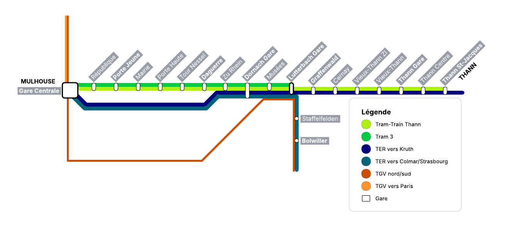

🚆 Gare Mulhouse-Lutterbach TGV et tram-train Mulhouse – Guebwiller
Résumé rapide
- Créer une gare Mulhouse-Lutterbach TGV connectée au réseau régional et au tram-train.
- Fluidifier le nœud ferroviaire mulhousien en limitant les conflits de circulation.
- Rouvrir une desserte vers Guebwiller et renforcer les liaisons entre vallées.
- Proposer une vision de mobilité durable, avec des bénéfices et des limites clairement identifiés.
Contexte ferroviaire
Mulhouse constitue le deuxième nœud ferroviaire d'Alsace après Strasbourg. Il s'agit d'un point stratégique du réseau régional, où convergent des circulations TER, TGV, fret et tram-train.
Plusieurs axes majeurs y passent, notamment :
- Ligne Strasbourg – Bâle
- Ligne Mulhouse – Belfort
- Ligne Mulhouse – Kruth
- Ligne Mulhouse – Müllheim (Allemagne)
- Réseau tram-train Mulhouse – Vallée de la Thur
- Axe TGV Paris – Mulhouse / Bâle / Zürich
- Axe TGV Nord–Sud de la France
- Fret vers la Suisse et l'Allemagne
- Axe fret Nord–Sud de la France
Cette concentration de circulations entraîne une forte sollicitation des infrastructures, limite les possibilités d'ajout de nouvelles dessertes et provoque régulièrement des conflits de circulation. Des travaux de modernisation du nœud ferroviaire sont d'ailleurs en cours depuis 2019 afin d'en améliorer la capacité et la fiabilité.
Le projet présenté ici propose une évolution du système existant afin d'améliorer les correspondances, de réduire la saturation du nœud ferroviaire mulhousien et de renforcer la desserte ferroviaire du sud de l'Alsace.
Problèmes identifiés
- Conflits de circulation entre TER, TGV et fret
- Capacité limitée du nœud ferroviaire
- Difficulté à ajouter de nouvelles dessertes
- Organisation complexe impactant la régularité
Chiffres clés
- 🚆 Environ 300 trains par jour à Mulhouse
- 👥 5,7 millions de voyageurs par an
- 📅 Infrastructure en grande partie conçue dans les années 1950
- 🌍 Carrefour ferroviaire France – Suisse – Allemagne
1. Objectif du projet
Ce projet propose la création d'une nouvelle gare Mulhouse-Lutterbach TGV, connectée à la LGV Rhin-Rhône dans l’hypothèse de son prolongement vers Mulhouse. L'objectif est de :
- Améliorer l'accès au réseau TGV pour l'agglomération mulhousienne et son bassin de vie
- Éviter le passage systématique des TGV par la gare de Mulhouse-Ville, ce qui réduit les contraintes d'exploitation sur le nœud ferroviaire
- Réduire la saturation de la ligne Mulhouse – Belfort, qui accueille aujourd'hui un trafic très diversifié (TGV, TER et trains de fret) et pour laquelle l'ajout de nouveaux sillons devient difficile
- Permettre le développement de nouvelles dessertes TGV, notamment vers les grandes métropoles françaises et européennes
- Créer une interconnexion directe avec les réseaux tram-train et TER
La gare deviendrait un pôle d'échanges multimodal entre TGV, TER et tram-train, facilitant le rabattement des voyageurs depuis les vallées et les villes du bassin mulhousien vers la grande vitesse.
Dans une logique d'aménagement du territoire, ce type de connexion permet également de mieux intégrer les territoires périphériques au réseau à grande vitesse, en favorisant les correspondances efficaces entre les lignes locales et les axes nationaux.
2. La gare Mulhouse-Lutterbach TGV
La gare serait située à l'ouest de Lutterbach, à proximité de l'actuelle ligne Mulhouse – Kruth. Elle comprendrait :
- Des quais TGV sur la LGV Rhin-Rhône
- Des quais bas pour la ligne Mulhouse – Kruth
- Des quais hauts pour une nouvelle ligne Mulhouse – Guebwiller
Cette configuration permettrait de créer une véritable plateforme d'échanges ferroviaires, facilitant les correspondances entre trains régionaux, tram-trains et TGV.
La gare serait construite surélevée, car la LGV franchirait :
- La ligne Mulhouse – Kruth
- La voie rapide D1066
Au moyen d'un pont ferroviaire. Cette implantation permettrait d'assurer la continuité du réseau existant tout en limitant les conflits de circulation entre les différentes lignes ferroviaires.
Accessibilité routière et stationnement
La proximité immédiate de la voie rapide D1066 faciliterait grandement la connexion au réseau routier et permettrait une liaison directe vers le réseau de car et bus. Cette configuration offrirait également une excellente intermodalité routière-ferroviaire.
Le site choisi, actuellement occupé par une grande forêt, offrirait des avantages majeurs en termes de foncier et d'aménagement. Le terrain étant naturellement très plat et disposant d'une superficie importante, il serait donc possible de :
- Construire un grand parking relais multimodal pour les voyageurs
- Aménager des aires de stationnement pour les bus et autocars
- Créer des zones de verdure et de stationnement perméable
Cette capacité de stationnement étendue réduirait considérablement la pression sur les gares périphériques actuelles et offrirait une alternative aux déplacements vers le centre-ville de Mulhouse.
3. La LGV Rhin-Rhône
Prolongement de la LGV
Dans le cadre de ce projet, l'hypothèse d'un prolongement de la LGV Rhin-Rhône vers Mulhouse constitue un élément structurant. Le tracé présenté ici repose sur une logique d'insertion territoriale visant à limiter au maximum les nuisances pour les populations locales.
Ainsi, l'itinéraire proposé cherche à éviter autant que possible les zones urbanisées, en réduisant le passage à proximité des communes afin de limiter les impacts sonores et visuels. Il privilégie également, sur une part importante de son parcours, un rapprochement avec l'autoroute, permettant de concentrer les nuisances sur un axe déjà existant.
Ce choix implique toutefois un détour vers l'est par rapport à un tracé le plus direct.
Il convient néanmoins de préciser que ce tracé ne constitue qu'une illustration. Un prolongement réel de la LGV Rhin-Rhône reposerait sur des études approfondies intégrant de nombreuses contraintes techniques, environnementales, foncières et économiques, qui dépassent largement le cadre de cette proposition.
Le projet présenté s'appuie donc sur cette hypothèse sans prétendre en déterminer une version définitive.
Embranchement nord vers la LGV Rhin-Rhône
TGV en provenance de Colmar/Strasbourg vers la LGV
Pour les TGV en provenance de Colmar ou de Strasbourg, circulant sur la ligne classique Strasbourg – Bâle (circulation à droite), le raccordement vers la LGV Rhin-Rhône serait situé au sud de la gare de Richwiller.
À cet endroit, les voies se sépareraient de la ligne existante et resteraient parallèles sur une courte distance, afin de permettre à la voie du raccordement opposé de les franchir au moyen d’un pont ferroviaire.
Après ce franchissement, les voies se dirigeraient vers la gare Mulhouse-Lutterbach TGV en prenant légèrement de l’altitude, la gare étant implantée sur un remblai. Les voies seraient ainsi déjà positionnées pour permettre une circulation à gauche, conformément au sens de circulation utilisé dans le reste de la France.
TGV quittant la LGV vers Colmar / Strasbourg
Pour les TGV quittant la LGV Rhin-Rhône en direction de Colmar ou de Strasbourg, la voie du raccordement s’orienterait, à la sortie de la gare TGV, vers la ligne Strasbourg – Bâle en restant à un niveau plus élevé, la gare TGV étant déjà surélevée.
Elle franchirait successivement la voie du raccordement opposé puis la ligne classique au moyen d’un pont, afin d’éviter tout conflit de circulation.
Après ce franchissement, la voie se placerait entre la ligne Strasbourg – Bâle et les nouvelles voies du tram-train vers Guebwiller, le temps de redescendre progressivement pour se raccorder définitivement à la ligne existante en direction de Colmar et Strasbourg.
Embranchement sud vers la LGV Rhin-Rhône
TGV en provenance de Mulhouse-Ville / Suisse vers la LGV
Pour les TGV en provenance de Mulhouse-Ville ou de la Suisse (circulation à droite), le raccordement vers la LGV Rhin-Rhône serait situé après la gare de Lutterbach.
La voie se séparerait de la ligne Strasbourg – Bâle et resterait parallèle sur une courte distance afin de prendre de l’altitude, puis franchirait la ligne au moyen d’un pont ferroviaire.
Le raccordement se poursuivrait ensuite vers le sud en restant en hauteur, d’abord sur un talus puis sur un nouvel ouvrage permettant de franchir la ligne Mulhouse – Kruth, la RD 1066 ainsi que la voie du raccordement opposé.
À la sortie de cet ouvrage, les voies seraient déjà parallèles à la LGV Rhin-Rhône et correctement positionnées pour s’y raccorder par la gauche.
Dans cette configuration, les TGV en provenance de Mulhouse-Ville ou de la Suisse ne desserviraient pas la gare Mulhouse-Lutterbach TGV.
TGV quittant la LGV vers Mulhouse-Ville / Suisse
Pour les TGV quittant la LGV Rhin-Rhône en direction de Mulhouse-Ville ou de la Suisse, la voie de raccordement se séparerait bien en amont sur la LGV afin de s’écarter suffisamment vers la gauche tout en descendant légèrement en altitude.
Elle s’orienterait ensuite vers l'est et passerait sous la LGV ainsi que sous la voie du raccordement opposé, avant de se poursuivre en tranchée couverte sous la RD 1066 puis sous la ligne Mulhouse – Kruth.
À la sortie de cette tranchée, la voie serait quasi parallèle à la ligne Mulhouse – Kruth et se raccorderait alors en alignement à la ligne Strasbourg – Bâle en direction de Mulhouse-Ville et de la Suisse.
Dans cette configuration, les TGV à destination de Mulhouse-Ville ou de la Suisse ne desserviraient pas la gare Mulhouse-Lutterbach TGV.
4. Nouvelle ligne tram-train Mulhouse – Guebwiller
Le projet prévoit la création d'une ligne tram-train reliant Mulhouse à Guebwiller, permettant de reconnecter la vallée au réseau ferroviaire.
Infrastructure
Une grande partie du tracé réutiliserait d'anciennes lignes ferroviaires abandonnées
- Une premiere située à l'est de la ligne Strasbourg – Bâle entre Richwiller et Bollwiller
- Puis une autre déjà existante entre Bollwiller et Guebwiller
La réutilisation de cette infrastructure permettrait de limiter les coûts de construction et de valoriser une plateforme ferroviaire existante.
Deux sauts-de-mouton seraient nécessaires :
- À la sortie de Mulhouse-Lutterbach TGV
- Après Bollwiller pour rejoindre la ville de Guebwiller
La ligne franchirait la RD83 entre Bollwiller et Soultz en souterrain, afin de limiter les conflits de circulation et permettant également la traversée pour une piste cyclable parallèle aux voies.
Configuration de la ligne
- Voie double entre Mulhouse Gare Centrale et Mulhouse-Dornach
- Voie unique entre Dornach Gare et Guebwiller Heissenstein
- Points de croisement prévus :
- Musées
- de Lutterbach Gare à Mulhouse-Lutterbach TGV
- Entre Richwiller et Wittelsheim
- Wittelsheim
- Bollwiller
- Soultz Centre
- Entre Guebwiller-Storck et Guebwiller Gare
- Terminus Guebwiller Heissenstein
Ce type d'exploitation est adapté à une ligne de tram-train, permettant une fréquence régulière tout en limitant les coûts d'infrastructure.
Arrêts envisagés après Lutterbach Gare
Anciennes gares réhabilitées :
- Richwiller
- Wittelsheim
- Guebwiller Gare
Gares existantes réhabilitées :
- Staffelfelden
- Bollwiller
Nouvelles gares :
- Soultz Nouveau-Monde
- Soultz Zone Industrielle
- Soultz Centre
- Guebwiller – Storck
- Guebwiller Centre
- Guebwiller Heissenstein
Cette ligne permettrait de desservir directement plusieurs communes aujourd'hui dépendantes de la voiture, en améliorant leur accès à Mulhouse et au réseau ferroviaire.
Elle contribuerait aussi à réduire la pression sur les gares de rabattement, notamment à Bollwiller, où le stationnement est fréquemment saturé dès le matin malgré la récente extension de son parking.
5. Réseaux
Prolongement possible du tram 3
Le projet permettrait également le prolongement de la ligne 3 du tramway de Mulhouse jusqu’à la gare Mulhouse-Lutterbach TGV, où elle ferait terminus au niveau des quais hauts.
Cette extension permettrait une liaison directe entre la gare centrale de Mulhouse et la gare TGV, sans rupture de charge, et renforcerait le rôle de la gare comme pôle multimodal.
Exploitation du réseau
Cette section présente une hypothèse de fonctionnement du réseau après réalisation du projet.
Les fréquences proposées sont indicatives et ne prennent pas en compte l'ensemble des contraintes techniques réelles (capacité du réseau, matériel roulant, signalisation, exploitation urbaine), mais visent à illustrer le potentiel offert par la nouvelle gare Mulhouse-Lutterbach TGV et par la création de la ligne Mulhouse – Guebwiller.
Tram-train Mulhouse – Thann
La ligne desservirait une nouvelle station :
Mulhouse-Lutterbach TGV (quais bas)
Entre Lutterbach Gare et Graffenwald.
Cette nouvelle station permettrait aux habitants de la vallée de la Thur de rejoindre directement la gare TGV par tram-train, sans devoir transiter par Mulhouse-Ville.
- Mulhouse Gare Centrale
- République
- Porte Jeune
- Mairie
- Porte Haute
- Tour Nessel
- Daguerre
- Zu Rhein
- Dornach Gare
- Musées
- Lutterbach Gare
- Mulhouse-Lutterbach TGV (quais bas)
- Graffenwald
- Cernay
- Vieux-Thann ZI
- Vieux-Thann
- Thann Gare
- Thann Centre
- Thann St-Jacques
Les quais bas seraient également utilisés par les trains Mulhouse – Kruth, renforçant le rôle de la gare comme point de correspondance régional.
Tram-train Mulhouse – Guebwiller
- Mulhouse Gare Centrale
- République
- Porte Jeune
- Mairie
- Porte Haute
- Tour Nessel
- Daguerre
- Zu Rhein
- Dornach Gare
- Musées
- Lutterbach Gare
- Mulhouse-Lutterbach TGV (quais hauts)
- Richwiller
- Wittelsheim
- Staffelfelden
- Bollwiller
- Soultz Nouveau-Monde
- Soultz Centre
- Soultz ZI
- Guebwiller – Storck
- Guebwiller Gare
- Guebwiller Centre
- Guebwiller Heissenstein
TER Thann – Guebwiller
Une nouvelle liaison ferroviaire pourrait également être créée :
- Thann Gare
- Vieux-Thann
- Vieux-Thann ZI
- Cernay
- Graffenwald
- Mulhouse-Lutterbach TGV
- Richwiller
- Wittelsheim
- Staffelfelden
- Bollwiller
- Soultz Nouveau-Monde
- Soultz Centre
- Soultz ZI
- Guebwiller – Storck
- Guebwiller Gare
- Guebwiller Centre
- Guebwiller Heissenstein
Cette liaison transversale permettrait de connecter les vallées de la Thur et de la Lauch.


6. Exploitation du réseau tram et tram-train
Aujourd'hui, la section urbaine entre Mulhouse Gare Centrale et Lutterbach Gare constitue le tronc commun entre la ligne 3 du tramway et le tram-train Mulhouse – Thann.
Le tramway ligne 3 a actuellement son terminus à Lutterbach, tandis que le tram-train poursuit sa circulation vers Cernay, Thann et la vallée de la Thur.
Sur cette section commune, la fréquence est d'environ 30 minutes par ligne, soit un passage toutes les 15 minutes environ entre Mulhouse et Lutterbach.
Dans le cadre du projet, la création de la gare Mulhouse-Lutterbach TGV permettrait de prolonger le tronc commun au-delà de Lutterbach, jusqu'à la nouvelle gare, qui deviendrait le nouveau point de correspondance entre tramway, tram-train et trains régionaux.
Le terminus de la ligne 3 serait déplacé à Mulhouse-Lutterbach TGV, et l'organisation des circulations pourrait être modifiée afin d'augmenter la fréquence sur la section urbaine.
Une hypothèse d'exploitation serait de mettre en place une cadence de 10 minutes sur le tronc commun entre Mulhouse Gare Centrale et Mulhouse-Lutterbach TGV, avec la répartition suivante :
- Un tramway ligne 3 toutes les 30 minutes
- Un tram-train à destination de Thann toutes les 30 minutes
- Un tram-train à destination de Guebwiller toutes les 30 minutes
La gare Mulhouse-Lutterbach TGV serait organisée avec deux niveaux de quais :
- Quais hauts pour le tramway ligne 3 et le tram-train à destination de Guebwiller
- Quais bas pour le tram-train à destination de Thann, en continuité avec la ligne existante vers Cernay et Kruth
Cette organisation permettrait d'obtenir une circulation toutes les 10 minutes sur le tronc commun urbain, avec une alternance entre :
- Tram 3
- Tram-train vallée de la Thur
- Tram-train vallée de Guebwiller
Cette hypothèse reste théorique et ne prend pas en compte l'ensemble des contraintes d'exploitation (capacité du centre-ville, signalisation, matériel roulant), mais elle illustre le potentiel offert par la création d'un nouveau pôle d'échanges à Mulhouse-Lutterbach TGV.
Liaison Thann – Guebwiller
La création de la ligne Mulhouse – Guebwiller permettrait également d'envisager une liaison directe entre les deux vallées, sans passage par le centre de Mulhouse.
Une hypothèse d'exploitation consisterait à créer un train régional Thann – Guebwiller toutes les 30 minutes.
Combinée avec les tram-trains vers Mulhouse, cette organisation permettrait d'obtenir une fréquence de 15 minutes dans chaque vallée, selon le principe suivant :
- Un train vers Mulhouse
- Un train vers l'autre vallée
- Un intervalle de 15 minutes entre chaque circulation
Cette organisation améliorerait fortement la desserte périurbaine et limiterait l'usage de la voiture, notamment pour les déplacements entre vallées.
Exploitation de la gare Mulhouse-Lutterbach TGV
La création d'une gare TGV à Lutterbach permettrait de modifier l'organisation actuelle des circulations à grande vitesse.
Dans l'hypothèse d'un prolongement de la LGV Rhin-Rhône vers Mulhouse, les trains à destination de Paris pourraient rejoindre directement la ligne à grande vitesse sans passer par la ligne Mulhouse – Belfort, aujourd'hui très chargée.
Les études existantes sur la LGV Rhin-Rhône indiquent qu'un prolongement vers Mulhouse permettrait un gain de temps d'environ :
- 10 minutes pour les trains au départ de Mulhouse ou de Suisse
- 25 minutes pour les trains en provenance de Colmar / Strasbourg, qui doivent aujourd'hui contourner Mulhouse à vitesse réduite
Dans cette configuration, le temps de parcours entre Mulhouse et Paris pourrait être proche de 2h30, contre environ 2h40 actuellement.
Nouvelle desserte TGV possible


Avec l'organisation actuelle du réseau, la gare de Mulhouse-Lutterbach TGV ne serait pas desservie par les TGV à destination de Paris.
En effet, les TGV à destination de Paris partent aujourd'hui de Mulhouse-Ville et rejoignent la LGV Rhin-Rhône par la ligne classique Mulhouse – Belfort.
Dans le cadre du projet présenté ici, le raccordement à la LGV serait situé après la gare Mulhouse-Lutterbach TGV pour les trains en provenance de Mulhouse-Ville et de la Suisse, ce qui signifie que ces trains ne desserviraient pas la nouvelle gare.
Dans cette configuration, la desserte de Mulhouse-Lutterbach TGV par des TGV à destination de Paris nécessiterait la création de nouvelles relations passant directement par la gare.
On pourrait par exemple envisager la création de nouvelles relations TGV au départ de Colmar à destination de Paris Gare-de-Lyon via Mulhouse-Lutterbach TGV. Ces trains emprunteraient directement la LGV Rhin-Rhône sans passer par Strasbourg et la LGV Est.
Ce trajet au départ de Colmar serait légèrement plus long que l'itinéraire actuel via Strasbourg, avec un allongement estimé à une vingtaine de minutes, mais il permettrait :
- D'augmenter, à Colmar et à Mulhouse, le nombre de trains à destination de Paris (Gare de l'Est + Gare-de-Lyon)
- De limiter la saturation de la gare de Strasbourg
- De mieux répartir les circulations entre les différents axes du réseau
- De proposer davantage de liaisons Mulhouse – Paris tout en limitant les conflits de circulation dans le nœud ferroviaire de Mulhouse
La création de la gare Mulhouse-Lutterbach TGV permettrait ainsi d'envisager de nouvelles relations, par exemple :
- TGV Colmar – Mulhouse-Lutterbach TGV – Paris
- TGV Suisse – Mulhouse-Ville – Paris
Capacité du nœud ferroviaire de Mulhouse
Aujourd'hui, la section entre Mulhouse-Ville et Lutterbach Gare est déjà très utilisée par :
- TER vers Kruth
- Trains vers Strasbourg
- Trains vers Bâle
- Fret
La mise en service de la gare Mulhouse-Lutterbach TGV augmenterait encore le nombre de circulations sur cette courte section (environ 1 à 2 km) avec les TGV au départ de Mulhouse-Ville qui passent aujourd'hui par la ligne Mulhouse – Belfort.
La création de lignes Colmar - Paris via Mulhouse-Lutterbach TGV est donc justifiée.
Rôle de pôle multimodal
Avec la présence de :
- TGV
- TER
- Tram-train
- Tramway
- Parking relais de grande capacité (terrain plat et spacieux)
- Correspondances bus via la proximité de la D1066
La gare Mulhouse-Lutterbach TGV pourrait devenir un pôle d'échanges majeur à l'ouest de l'agglomération, réduisant la pression sur la gare centrale et sur les parkings des gares périphériques, notamment à Bollwiller.
L'accessibilité routière directe via la voie rapide D1066 et l'espace disponible pour un stationnement étendu renforceraient ce rôle de hub multimodal, en offrant aux voyageurs des alternatives commodes à la voiture au niveau du stationnement de proximité.
7. Impacts concrets pour les usagers et le territoire
Pour les voyageurs
- Amélioration de la régularité des trains
- Correspondances facilitées entre TER, tram-train et TGV
- Potentiels gains de temps sur certains trajets
Pour les transports du quotidien
- Augmentation possible des fréquences TER et tram-train
- Meilleure desserte des vallées
- Réduction de la dépendance à la voiture
Pour le territoire
- Renforcement de l’attractivité économique
- Amélioration des connexions avec les grandes métropoles
- Développement des mobilités durables
8. Bénéfices du projet
Le projet permettrait :
- Une meilleure connexion de Mulhouse et de son agglomération au réseau TGV
- Une désaturation de la ligne Mulhouse – Belfort, aujourd'hui utilisée à la fois par les TGV, les TER et le fret
- Une forte désaturation de la gare de Bollwiller : même après une extension récente du parking, celui-ci est souvent complet dès 8h du matin
- Une amélioration majeure de l'accès au rail pour Guebwiller, la plus grande ville du Grand Est non desservie par le train
- La réouverture ferroviaire de la vallée de Guebwiller, aujourd'hui privée de desserte ferroviaire
- Une intermodalité forte entre TGV, TER et tram-train
- De nouvelles liaisons transversales entre vallées, notamment Thann – Guebwiller
- Une amélioration de l'accessibilité du sud de l'Alsace dans le corridor ferroviaire européen Rhin-Rhône, renforçant son attractivité économique et sa connexion aux grandes métropoles européennes
Plus largement, ce type de projet s'inscrit dans les objectifs de transition vers des mobilités plus durables, en favorisant le report modal de la voiture vers le train et les transports collectifs.
9. Limites et précautions
Ce projet est une étude personnelle réalisée à titre de réflexion.
Il ne prend pas en compte l'ensemble des contraintes techniques, financières et réglementaires d'un projet réel, mais vise à illustrer une évolution possible du réseau ferroviaire autour de Mulhouse en s'appuyant sur des infrastructures existantes et sur des hypothèses évoquées dans plusieurs études nationales.
- La connexion LGV repose sur une hypothèse de prolongement à confirmer
- Les contraintes détaillées (foncier, environnement, coûts, calendrier) nécessitent des études complémentaires
- La section entre Mulhouse-Ville et Lutterbach pourrait être très saturée
À propos de l'auteur
Ce projet est une proposition personnelle portée par un étudiant en informatique, qui souhaite partager ses idées d'aménagement et d'exploitation ferroviaire à partir de ses recherches et de ses études. C'est aussi le travail d'un passionné de ferroviaire, animé par l'envie de contribuer au débat sur les mobilités de demain.
Cadre de l'étude
Cette présentation correspond à une réflexion personnelle et ne constitue pas un projet officiel. Elle s'appuie sur l'infrastructure actuelle, la réutilisation d'anciennes emprises ferroviaires et l'hypothèse d'un prolongement de la LGV Rhin-Rhône vers Mulhouse, évoquée dans plusieurs études nationales.
Conclusion
Face à la saturation progressive du nœud ferroviaire de Mulhouse, ce projet propose une approche pragmatique visant à améliorer la fluidité et la capacité du réseau.
En s’appuyant sur des aménagements ciblés et sur l’interconnexion des différents modes de transport, il illustre le potentiel d’optimisation des infrastructures existantes au service de la mobilité durable et du développement territorial.